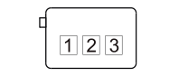

P047 LEFT REAR TWEETER SPEAKER (LEFT REAR DOOR)
- Path
- Electrical equipment > 3 CONNECTORS > P VARIOUS CONSUMERS > P047 LEFT REAR TWEETER SPEAKER > P047 LEFT REAR TWEETER SPEAKER (LEFT REAR DOOR)
- Kind
- connector pinout (pin -> wire colour -> other end)
- Applies to
- all engines; all production periods; only with equipment: HI-FI
- Interactive page
- https://sloeber94.github.io/elrnDB-fCrm/en/#/194005468
Applies to: all engines; all production periods; only with equipment: HI-FI

Wiring | Colour |
|---|---|
NERO (black) |
Pin | Cable | Destination | |||
|---|---|---|---|---|---|
Sec.. | Colour | Node | Connect. | Pin | |
2 | 0,75 | NR (black with red stripe) | X | 2 | |
C6 | |||||
3 | 0,75 | BG (white with yellow stripe) | X | 1 | |
C5 | |||||